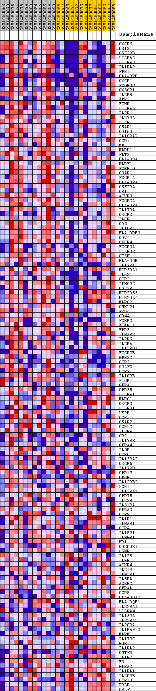
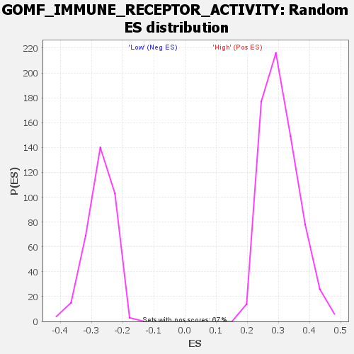

Profile of the Running ES Score & Positions of GeneSet Members on the Rank Ordered List
| Dataset | WG6v3.CYGB.cls#High_versus_Low.CYGB.cls#High_versus_Low_repos |
| Phenotype | CYGB.cls#High_versus_Low_repos |
| Upregulated in class | High |
| GeneSet | GOMF_IMMUNE_RECEPTOR_ACTIVITY |
| Enrichment Score (ES) | 0.65843165 |
| Normalized Enrichment Score (NES) | 2.1577506 |
| Nominal p-value | 0.0 |
| FDR q-value | 0.0 |
| FWER p-Value | 0.0 |
| SYMBOL | TITLE | RANK IN GENE LIST | RANK METRIC SCORE | RUNNING ES | CORE ENRICHMENT | |
|---|---|---|---|---|---|---|
| 1 | CXCR6 | CXCR6 | 15 | 0.530 | 0.0432 | Yes |
| 2 | EBI3 | EBI3 | 33 | 0.476 | 0.0817 | Yes |
| 3 | CSF2RB | CSF2RB | 68 | 0.395 | 0.1127 | Yes |
| 4 | LILRA2 | LILRA2 | 91 | 0.361 | 0.1415 | Yes |
| 5 | LILRA3 | LILRA3 | 98 | 0.355 | 0.1706 | Yes |
| 6 | IL1RAP | IL1RAP | 128 | 0.322 | 0.1958 | Yes |
| 7 | FPR1 | FPR1 | 132 | 0.319 | 0.2220 | Yes |
| 8 | HLA-DRB1 | HLA-DRB1 | 155 | 0.289 | 0.2448 | Yes |
| 9 | CXCR1 | CXCR1 | 165 | 0.282 | 0.2677 | Yes |
| 10 | FCGR3B | FCGR3B | 178 | 0.273 | 0.2897 | Yes |
| 11 | CX3CR1 | CX3CR1 | 184 | 0.268 | 0.3117 | Yes |
| 12 | IL2RB | IL2RB | 216 | 0.246 | 0.3305 | Yes |
| 13 | FPR2 | FPR2 | 286 | 0.213 | 0.3445 | Yes |
| 14 | FCMR | FCMR | 371 | 0.183 | 0.3554 | Yes |
| 15 | LILRA5 | LILRA5 | 385 | 0.180 | 0.3696 | Yes |
| 16 | IL7R | IL7R | 437 | 0.170 | 0.3811 | Yes |
| 17 | IL27RA | IL27RA | 478 | 0.161 | 0.3924 | Yes |
| 18 | LIFR | LIFR | 491 | 0.159 | 0.4049 | Yes |
| 19 | C5AR1 | C5AR1 | 530 | 0.153 | 0.4157 | Yes |
| 20 | CD160 | CD160 | 612 | 0.141 | 0.4231 | Yes |
| 21 | IL18RAP | IL18RAP | 614 | 0.141 | 0.4348 | Yes |
| 22 | CCR1 | CCR1 | 639 | 0.138 | 0.4449 | Yes |
| 23 | MPL | MPL | 690 | 0.132 | 0.4532 | Yes |
| 24 | KLRD1 | KLRD1 | 721 | 0.129 | 0.4623 | Yes |
| 25 | FLT3 | FLT3 | 729 | 0.128 | 0.4725 | Yes |
| 26 | HLA-DOA | HLA-DOA | 794 | 0.121 | 0.4793 | Yes |
| 27 | KLRF1 | KLRF1 | 849 | 0.115 | 0.4860 | Yes |
| 28 | FCER1G | FCER1G | 856 | 0.114 | 0.4952 | Yes |
| 29 | C3AR1 | C3AR1 | 871 | 0.113 | 0.5038 | Yes |
| 30 | FCGR1A | FCGR1A | 914 | 0.109 | 0.5107 | Yes |
| 31 | HLA-DRA | HLA-DRA | 1000 | 0.104 | 0.5149 | Yes |
| 32 | CSF2RA | CSF2RA | 1021 | 0.102 | 0.5223 | Yes |
| 33 | CR1 | CR1 | 1063 | 0.099 | 0.5284 | Yes |
| 34 | ACKR3 | ACKR3 | 1094 | 0.098 | 0.5349 | Yes |
| 35 | FCGR2A | FCGR2A | 1105 | 0.097 | 0.5424 | Yes |
| 36 | HLA-DPA1 | HLA-DPA1 | 1125 | 0.096 | 0.5494 | Yes |
| 37 | IL17RA | IL17RA | 1155 | 0.094 | 0.5557 | Yes |
| 38 | CXCR2 | CXCR2 | 1164 | 0.093 | 0.5630 | Yes |
| 39 | IL6R | IL6R | 1177 | 0.093 | 0.5701 | Yes |
| 40 | CD4 | CD4 | 1191 | 0.092 | 0.5770 | Yes |
| 41 | IL10RA | IL10RA | 1215 | 0.090 | 0.5833 | Yes |
| 42 | HLA-DRB3 | HLA-DRB3 | 1220 | 0.090 | 0.5906 | Yes |
| 43 | CD74 | CD74 | 1226 | 0.090 | 0.5978 | Yes |
| 44 | CXCR4 | CXCR4 | 1236 | 0.089 | 0.6047 | Yes |
| 45 | FCGR3A | FCGR3A | 1249 | 0.088 | 0.6114 | Yes |
| 46 | LILRB2 | LILRB2 | 1367 | 0.082 | 0.6122 | Yes |
| 47 | CTSH | CTSH | 1500 | 0.076 | 0.6116 | Yes |
| 48 | HLA-DOB | HLA-DOB | 1530 | 0.075 | 0.6163 | Yes |
| 49 | IL17RE | IL17RE | 1553 | 0.074 | 0.6213 | Yes |
| 50 | KIR3DL1 | KIR3DL1 | 1655 | 0.070 | 0.6218 | Yes |
| 51 | IL6ST | IL6ST | 1680 | 0.069 | 0.6263 | Yes |
| 52 | CCR2 | CCR2 | 1871 | 0.063 | 0.6216 | Yes |
| 53 | IFNGR2 | IFNGR2 | 1917 | 0.061 | 0.6244 | Yes |
| 54 | CSF3R | CSF3R | 1918 | 0.061 | 0.6294 | Yes |
| 55 | KIR2DS5 | KIR2DS5 | 1946 | 0.060 | 0.6330 | Yes |
| 56 | KIR2DL4 | KIR2DL4 | 1985 | 0.059 | 0.6360 | Yes |
| 57 | KLRC2 | KLRC2 | 2031 | 0.058 | 0.6385 | Yes |
| 58 | CMKLR1 | CMKLR1 | 2037 | 0.058 | 0.6430 | Yes |
| 59 | FZD4 | FZD4 | 2072 | 0.057 | 0.6460 | Yes |
| 60 | CD44 | CD44 | 2126 | 0.055 | 0.6478 | Yes |
| 61 | FCER2 | FCER2 | 2295 | 0.051 | 0.6432 | Yes |
| 62 | FCER1A | FCER1A | 2329 | 0.050 | 0.6457 | Yes |
| 63 | FPR3 | FPR3 | 2408 | 0.048 | 0.6456 | Yes |
| 64 | IFNAR2 | IFNAR2 | 2409 | 0.048 | 0.6496 | Yes |
| 65 | IL2RG | IL2RG | 2454 | 0.047 | 0.6512 | Yes |
| 66 | IL2RA | IL2RA | 2515 | 0.046 | 0.6519 | Yes |
| 67 | IL12RB1 | IL12RB1 | 2553 | 0.045 | 0.6537 | Yes |
| 68 | FCGR2B | FCGR2B | 2685 | 0.042 | 0.6504 | Yes |
| 69 | GPR32 | GPR32 | 2688 | 0.042 | 0.6538 | Yes |
| 70 | CCR3 | CCR3 | 2756 | 0.041 | 0.6537 | Yes |
| 71 | CRLF2 | CRLF2 | 2759 | 0.041 | 0.6570 | Yes |
| 72 | CCR7 | CCR7 | 2796 | 0.040 | 0.6584 | Yes |
| 73 | IL10RB | IL10RB | 3064 | 0.035 | 0.6475 | No |
| 74 | PIGR | PIGR | 3155 | 0.034 | 0.6457 | No |
| 75 | GFRA1 | GFRA1 | 3174 | 0.034 | 0.6475 | No |
| 76 | GPR35 | GPR35 | 3211 | 0.033 | 0.6484 | No |
| 77 | LILRA1 | LILRA1 | 3299 | 0.032 | 0.6465 | No |
| 78 | KLRC1 | KLRC1 | 3386 | 0.030 | 0.6445 | No |
| 79 | CXCR3 | CXCR3 | 3397 | 0.030 | 0.6465 | No |
| 80 | LILRB1 | LILRB1 | 3462 | 0.029 | 0.6456 | No |
| 81 | LEPR | LEPR | 3644 | 0.027 | 0.6385 | No |
| 82 | CCR5 | CCR5 | 3771 | 0.026 | 0.6341 | No |
| 83 | C5AR2 | C5AR2 | 3937 | 0.024 | 0.6275 | No |
| 84 | CCRL2 | CCRL2 | 3949 | 0.024 | 0.6290 | No |
| 85 | IL3RA | IL3RA | 4130 | 0.022 | 0.6215 | No |
| 86 | CR2 | CR2 | 4315 | 0.020 | 0.6136 | No |
| 87 | IL17REL | IL17REL | 4391 | 0.020 | 0.6114 | No |
| 88 | GFRA4 | GFRA4 | 4606 | 0.018 | 0.6018 | No |
| 89 | IL4R | IL4R | 5316 | 0.013 | 0.5661 | No |
| 90 | CCR6 | CCR6 | 5546 | 0.012 | 0.5552 | No |
| 91 | IL13RA2 | IL13RA2 | 6200 | 0.009 | 0.5220 | No |
| 92 | CXCR5 | CXCR5 | 6296 | 0.008 | 0.5178 | No |
| 93 | IL17RD | IL17RD | 6758 | 0.006 | 0.4944 | No |
| 94 | GPR17 | GPR17 | 7254 | 0.004 | 0.4691 | No |
| 95 | EPOR | EPOR | 7317 | 0.004 | 0.4662 | No |
| 96 | IL12RB2 | IL12RB2 | 7401 | 0.004 | 0.4622 | No |
| 97 | XCR1 | XCR1 | 7747 | 0.003 | 0.4445 | No |
| 98 | IL13RA1 | IL13RA1 | 7859 | 0.002 | 0.4389 | No |
| 99 | GPR75 | GPR75 | 7929 | 0.002 | 0.4355 | No |
| 100 | IL23R | IL23R | 8102 | 0.001 | 0.4267 | No |
| 101 | IL31RA | IL31RA | 8191 | 0.001 | 0.4223 | No |
| 102 | GFRA3 | GFRA3 | 8576 | -0.000 | 0.4024 | No |
| 103 | CCR9 | CCR9 | 9274 | -0.002 | 0.3664 | No |
| 104 | IL1R1 | IL1R1 | 9565 | -0.003 | 0.3516 | No |
| 105 | IFNAR1 | IFNAR1 | 9847 | -0.004 | 0.3374 | No |
| 106 | CCR4 | CCR4 | 10015 | -0.005 | 0.3291 | No |
| 107 | IL18R1 | IL18R1 | 10455 | -0.006 | 0.3069 | No |
| 108 | IFNGR1 | IFNGR1 | 10544 | -0.007 | 0.3029 | No |
| 109 | MR1 | MR1 | 10559 | -0.007 | 0.3027 | No |
| 110 | CD200R1 | CD200R1 | 10640 | -0.007 | 0.2992 | No |
| 111 | OSMR | OSMR | 11062 | -0.009 | 0.2780 | No |
| 112 | IL12B | IL12B | 11153 | -0.009 | 0.2741 | No |
| 113 | IL9R | IL9R | 11168 | -0.009 | 0.2741 | No |
| 114 | ACKR4 | ACKR4 | 11284 | -0.009 | 0.2690 | No |
| 115 | IL21R | IL21R | 12108 | -0.013 | 0.2273 | No |
| 116 | IFNLR1 | IFNLR1 | 12144 | -0.013 | 0.2266 | No |
| 117 | IL5RA | IL5RA | 12232 | -0.013 | 0.2232 | No |
| 118 | ACKR2 | ACKR2 | 12480 | -0.014 | 0.2115 | No |
| 119 | GFRAL | GFRAL | 12491 | -0.014 | 0.2122 | No |
| 120 | CCR8 | CCR8 | 13012 | -0.017 | 0.1866 | No |
| 121 | HLA-DQA2 | HLA-DQA2 | 14325 | -0.025 | 0.1207 | No |
| 122 | HLA-DQB1 | HLA-DQB1 | 14587 | -0.028 | 0.1095 | No |
| 123 | IL22RA1 | IL22RA1 | 14785 | -0.029 | 0.1016 | No |
| 124 | LILRA4 | LILRA4 | 14812 | -0.029 | 0.1027 | No |
| 125 | IL15RA | IL15RA | 15401 | -0.034 | 0.0751 | No |
| 126 | IL22RA2 | IL22RA2 | 15673 | -0.037 | 0.0640 | No |
| 127 | IL20RA | IL20RA | 16400 | -0.045 | 0.0301 | No |
| 128 | IL1RAPL2 | IL1RAPL2 | 16935 | -0.052 | 0.0067 | No |
| 129 | KLRK1 | KLRK1 | 17210 | -0.056 | -0.0028 | No |
| 130 | IL17RC | IL17RC | 17360 | -0.059 | -0.0056 | No |
| 131 | GHR | GHR | 17743 | -0.067 | -0.0199 | No |
| 132 | IL1RL2 | IL1RL2 | 17951 | -0.072 | -0.0246 | No |
| 133 | CNTFR | CNTFR | 18026 | -0.074 | -0.0223 | No |
| 134 | IL1R2 | IL1R2 | 18339 | -0.085 | -0.0314 | No |
| 135 | F3 | F3 | 18609 | -0.098 | -0.0372 | No |
| 136 | GFRA2 | GFRA2 | 18829 | -0.113 | -0.0392 | No |
| 137 | IL1RL1 | IL1RL1 | 18962 | -0.126 | -0.0357 | No |
| 138 | IL20RB | IL20RB | 18971 | -0.127 | -0.0255 | No |
| 139 | CCR10 | CCR10 | 19124 | -0.151 | -0.0209 | No |
| 140 | PRLR | PRLR | 19334 | -0.214 | -0.0140 | No |
| 141 | CRLF1 | CRLF1 | 19352 | -0.223 | 0.0036 | No |

